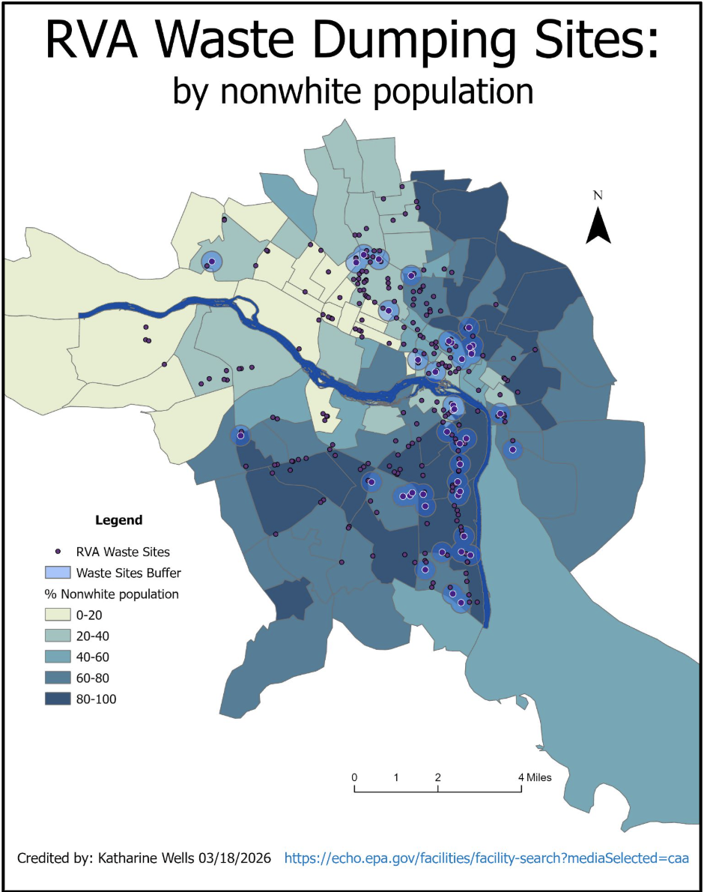
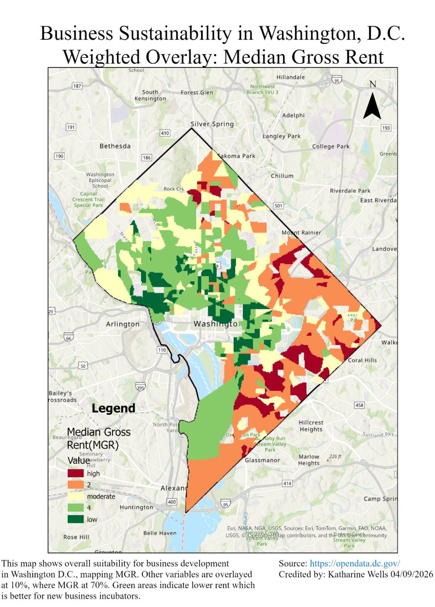

Geography coursework · 2026
Selected GIS Coursework Maps
Two maps created for geography coursework, using spatial analysis to communicate environmental and economic patterns.

Nonwhite population and disposal-site buffers · March 2026

Weighted suitability overlay and median gross rent · April 2026
These are original course maps. They are shown as supplied, with no reconstructed or AI-generated map content.